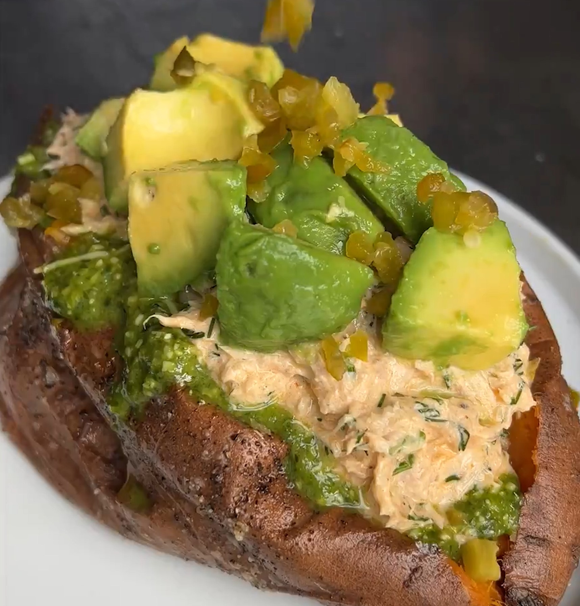

Spicy Tunacado Jacket Potato
Spruced up alternative to the classic tuna jacket. Healthier and bursting with flavour.

Ingredients (4 servings)
- 4 Sweet Potatos
- 15g Fresh Dill
- 55g Pickled Jalopenos
- 2x145g Cans Tuna
- 2 tbsps Mayo
- 5 tbsps Greek Yoghurt
- 2 tbsps Capers
- 6 tbsps Hot Sauce
- 2 Avocados
- 5 tbsps Green Pesto
- 100g Salad Sprouts
- 2 tbsps Olive Oil
- Salt
- Pepper
Instructions
- Heat the oven to 160°C. Get the potatoes onto a baking tray and rub with olive oil, salt and pepper. Roast for 45 mins to 1 hour until a knife can go through easily and the skin is crisp.
- Finely chop the dill and add to a bowl with the pickled jalapeños, drained tuna, mayo, greek yoghurt, capers and a splash of pickle juice. Mix well and season with salt, pepper and hot sauce. Add more if you want it extra spicy!
- Dice the avocado. Cut the potatoes open and roughly mash, spooning a bit of the pesto in. Top with the spicy tuna and avocado before garnishing with the sprouts.
Back home